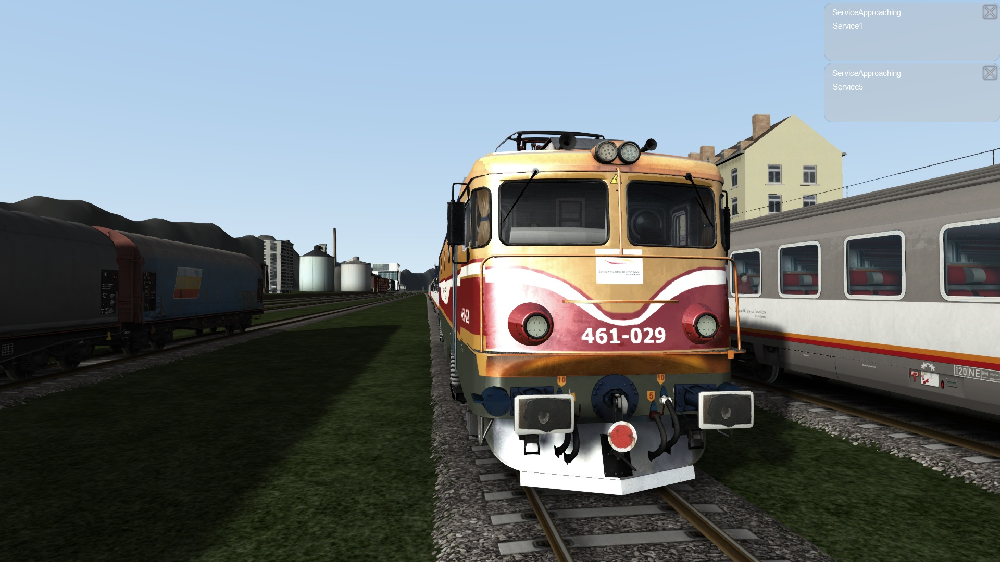

Mirko Obadovic

Hobiji
Contact
Summary
I am a hardworking and dedicated individual with experience in customer care service of DT Group and administration.
Education
- Bachelor of Computer Science (BApp) - Electrotehnical Faculty of Montenegrian University - UCG (2020-2024)
Work Experience
Skills
- HTML,CSS,PHP,JavaScript
- Python,C,C++,VBA,Matlab,CISCO Lab,MS Office
- English Language C1,Italian Language B2,German Language A1